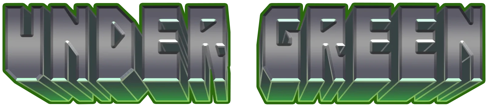

Steamでの発売を目指して開発を進めながら、インディーゲームイベントに出展しています。
イベント出展履歴
- 2026ゲームパビリオンjp2026
- 2026九州学生ゲーム大祭2026

ゲーム本体のCSVと3Dモジュールを読み込むため、ローカルサーバーから開いてください。
UNLICENSED SIGNAL / CH.004 — LIVE FEED
WHO OWNS THE SEED? その種は、誰のもの？
ディストピア違法農場経営シミュレーションPC / STEAM — IN DEVELOPMENT
LIVE — RUNNING IN YOUR BROWSER
ARCHIVE 08-14 // RESTORED TEXTRESTORED 000%
人類はいま、核戦争によって壊滅した地球において、緩やかな滅亡へと向かっている。
土も空気も汚染され、地下シェルターへと逃げ延びた人々は、食料生産企業によって厳しく統制されている。
人類史をとおして長らく続いた武器による支配は、食料生産独占による支配に置き換わった。
ホコリと鉄サビにまみれたシェルター。
失われた知識を手に、禁じられた食糧生産を始めた主人公。
その行為は人類の未来になにをもたらすのだろうか？
人類はいま、核戦争によって壊滅した地球において、緩やかな滅亡へと向かっている。
『UNDERGREEN』は、核汚染によって崩壊した地上から逃れた人々が過ごす巨大企業に管理された地下都市で、禁じられた食糧生産＝水耕栽培を営む、SF農業経営シミュレーションです。
様々な利害関係が渦巻く地下世界は、曲者ぞろい
SFマガジン 2026年10月号
『UNDER GREEN』が掲載されました。
TRAILER // 求人案内動画編
※ この映像はゲーム「UNDER GREEN」のPVであり、実際のゲーム映像とは異なります。
人は殺せませんが、農場を守る心強いパートナーですよ。